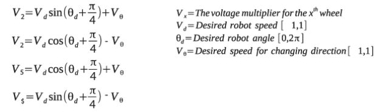

Odom X Controller - November 20, 2019
Table of contents
Having an X-Drive allows for much more complex algorithms. Not only can it move in all directions, but it can move independently of heading. This allows the robot to drive while turning, which is very useful for competition.
As of writing this, none of my autonomous programs use any turn commands, because all the required turning is handled while driving.
Directional Drive
I have made a function that allows me to tell the robot to drive in a certain direction. Using this math I can tell the chassis to strafe at a certain direction and speed.

Here is the lib7842 implementation of this functionality:
/**
* Control the chassis movement for an XDrive using voltage. Strafes at the given voltage in the
* given direction. Applies magnitude control to prioritize turning. Range of forward, yaw, and
* strafe is +-1, but yaw may be outside of the range which prioritizes turning.
*
* @param model The chassis model
* @param forward The forward voltage
* @param yaw The yaw voltage
* @param direction The direction
*/
void strafeVector(const std::shared_ptr<XDriveModel>& model, double forward, double yaw,
const QAngle& direction);
PID Seeking
Driving to a point with an X-Drive is much easier than with a skid-steer drive. This is because the direction of the robot does not depend on the heading of the robot, which eliminates oscillation and other issues.
Driving to a point is as simple as using odometry to calculate the angle and distance to the target point. I then apply PID to the distance error to determine the speed at which the robot should be moving.
I can then use the above function to apply the PID output to the desired direction. Doing this, the robot will always move towards the target point, and it even handles settling really well.
Turning While Driving
Using the above calculations, turning while driving is quite easy to implement. I simply use an AngleCalculator to calculate the desired turning amount. I apply PID to the output of the AngleCalculator, and then combine that with the output of the movement command.
Using an AngleCalculator to calculate the desired angle is quite useful, as I can use it to tell the robot to face a point or angle while driving, as well as turn while driving.
Here is the lib7842 implementation of X-Drive movement:
void OdomXController::strafeToPoint(const Vector& targetPoint,
const AngleCalculator& angleCalculator, double turnScale,
const Settler& settler) {
resetPid();
auto rate = timeUtil.getRate();
do {
State state = getState();
distanceErr = state.distTo(targetPoint);
angleErr = angleCalculator(*this);
QAngle angleToTarget = angleToPoint(targetPoint);
double distanceVel = distanceController->step(-distanceErr.convert(millimeter));
double angleVel = angleController->step(-angleErr.convert(degree));
strafeVector(xModel, distanceVel, angleVel * turnScale, angleToTarget);
rate->delayUntil(10_ms);
} while (!settler(*this));
driveVector(xModel, 0, 0);
}
OdomXController Code
/**
* Odometry motion controller for X-Base chassis.
*/
class OdomXController : public OdomController {
public:
/**
* OdomXController. Implements chassis movement algorithms for the X drive.
*
* @param imodel The chassis model
* @param iodometry The chassis odometry
* @param idistanceController The distance pid controller
* @param iturnController The turning pid controller
* @param iangleController The angle pid controller, used to keep distance driving straight
*/
OdomXController(const std::shared_ptr<XDriveModel>& imodel,
const std::shared_ptr<Odometry>& iodometry,
std::unique_ptr<IterativePosPIDController> idistanceController,
std::unique_ptr<IterativePosPIDController> iturnController,
std::unique_ptr<IterativePosPIDController> iangleController,
const TimeUtil& itimeUtil);
virtual ~OdomXController() = default;
/**
* Strafe a distance in a relative direction while correcting angle using an AngleCalculator
*
* @param distance The distance
* @param direction The relative direction of the strafing
* @param angleCalculator The angle calculator
* @param turnScale The turn scale
* @param settler The settler
*/
virtual void
strafeRelativeDirection(const QLength& distance, const QAngle& direction,
const AngleCalculator& angleCalculator = makeAngleCalculator(),
double turnScale = 1,
const Settler& settler = defaultDriveAngleSettler);
/**
* Strafe a distance in an absolute direction while correcting angle using an AngleCalculator
*
* @param distance The distance
* @param direction The absolute direction of the strafing
* @param angleCalculator The angle calculator
* @param turnScale The turn scale
* @param settler The settler
*/
virtual void
strafeAbsoluteDirection(const QLength& distance, const QAngle& direction,
const AngleCalculator& angleCalculator = makeAngleCalculator(),
double turnScale = 1,
const Settler& settler = defaultDriveAngleSettler);
/**
* Strafe to a point using field-centric math and an AngleCalculator
*
* @param targetPoint The target point
* @param angleCalculator The angle calculator
* @param turnScale The turn scale
* @param settler The settler
*/
virtual void strafeToPoint(const Vector& targetPoint,
const AngleCalculator& angleCalculator = makeAngleCalculator(),
double turnScale = 1,
const Settler& settler = defaultDriveAngleSettler);
protected:
std::shared_ptr<XDriveModel> xModel {nullptr};
};